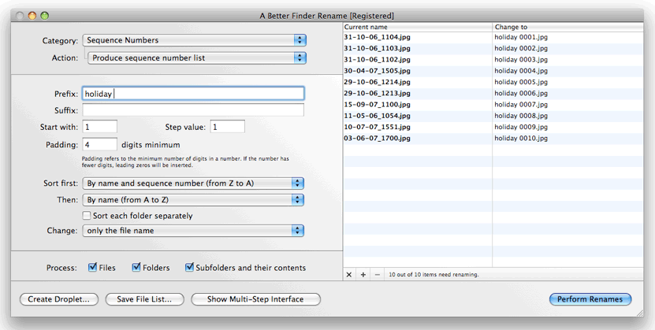

|

A Better Finder Rename 的主视图窗口分为多个不同的区域:
通过"类别："和"操作："弹出菜单(位于左上方)，您可以指定 重命名动作 将应用于现有文件名。
选择重命名操作后，其参数将在对话框中显示在其下方(在屏幕截图中，这是带有"前缀："和"后缀："字段的区域)。
在动作参数下，有三个复选框，可用于分别重命名文件和文件夹以及在子文件夹中包含或排除文件。
- "文件"所有选定的文件将被重命名。此设置不会影响所选的文件夹！
- "文件夹"所有选定的文件夹将被重命名。此设置不会影响所选文件。
- "子文件夹及其内容"复选框表示 A Better Finder Rename 不仅将处理选定的文件或文件夹，还将重命名所有选定文件夹中的文件和文件夹。 换句话说，它将重命名所选文件夹的文件夹层次结构中的所有内容。
可以组合使用三个刻度的设置。例如，替换所有三个替换，意味着将重命名所有副本文件夹的文件层次结构内部的所有文件和文件夹。复选框将意味着仅处理文件夹层次结构内部的文件，依此类推。
At the bottom of the dialog you will find a number of buttons.
The "Perform Rename" button applies the currently selected action(s) and parameters to the selected files. Press the return key or click on the button to rename the selected files.
The Create Droplet... button allows you to save the current settings to a droplet application.
To the right of the main dialog, you see the "preview" table.
This shows the "current name" of the file in the left column and previews the "new" file name in the right column. You can customize the columns in the menus.
|